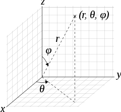
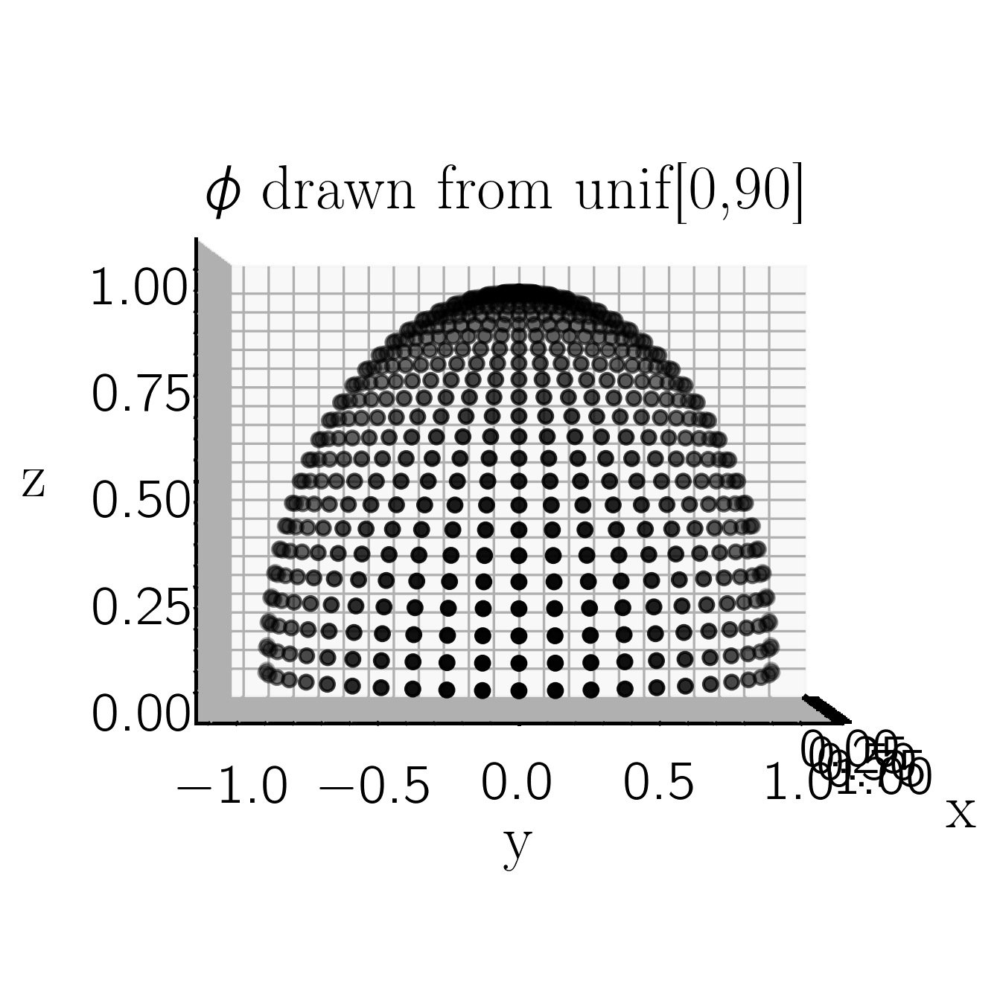
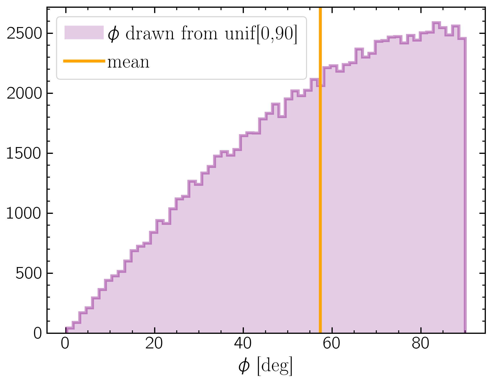
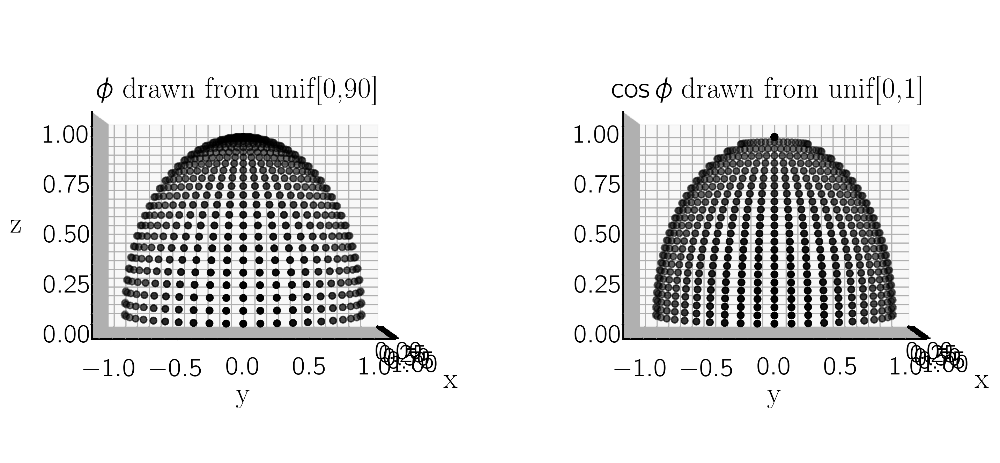

Why is 60 deg the average inclination for a uniform half-sphere?
In a spherical polar coordinate system:

where$\theta = \tan^{-1} \frac{y}{x}$, $\phi = \cos^{-1} \frac{z}{r}$, $r = [x^2 + y^2 + z^2]^{1/2}$.
When viewing a Keplerian orbit projected onto the plane of the sky, where the sky plane is the ($y$,$z$) plane and $+x$ is towards the observer, then orbital inclination is the same as $\phi$ in this system. Inclination is symetrical about the $y$-axis, with incl $<$90$^{o}$ corresponding to a prograde or counter-clockwise orbit, and incl $>$90$^{o}$ being retrograde or clockwise.
So, considering a unit half-sphere in this coordinate system, with $r = 1$, $\theta$ [-90, 90], and $\phi$ [0,90] (or $x$ [-1,1], $y$ [-1,1], and $z$ [0,1]), if we draw values of $\phi$ and $\theta$ from uniform distributions on those intervals (uniformly sampling the sphere), we get a sampling of the projected uniform sphere that looks like

Because of the projection onto the ($y,z$) plane, points near $\phi$ = 90 are more sparsely sampling the projected sphere than points near $\phi$ = 0. Looking at the histogram of points, it's clear that $\phi$ = 60$^{o}$ is the mean value.

Mathematically
The average of a function is given by $$ < f > \;=\; \frac{1}{b - a} \int_{a}^{b} f(x) \,dx$$ Thus $$ < \phi > \;=\; \frac{1}{1 - 0} \int_{1}^{0} \arccos(z) \,dz$$ We must use integration by parts to solve:
$$ $$ $$ \begin{array}{rcll} \int u\; dv & = & u\,v - \int v\; du \\ u & = & \arccos(z) \\ dv & = & dz \\ du & = & \frac{-1}{\sqrt{1 - z^2}}\; dz \\ v & = & z \\ \int_{1}^{0} \arccos(z) \,dz & = & z\; \arccos(z) \bigg\rvert_{0}^{1} - \int_{0}{1} \frac{-z}{\sqrt{1 - z^2}} dz\\ & = & \left[(1\times 0) - (0\times 1])\right] + \int_{0}^{1} \frac{-z}{\sqrt{1 - z^2}} dz\\ w & = & 1 - z^2\\ dw & = & -2z\; dz\\ & = & \int_{0}{1} \frac{1/2\; dw}{\sqrt{w}} \\ & = & \sqrt{1 - z^2} \bigg\rvert_{0}^{1} \\ & = & 1 \;\mathrm{radians}\\ & = & 57.3^{\circ} \end{array} $$
Inclination in orbit fitting
